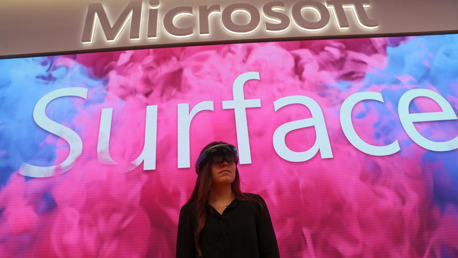

VIJESTI


Microsoft skratio radni tjedan, produktivnost skočila 40 posto
Microsoft je u japanskoj podružnici odlučio testirati radni tjedan od četiri dana, a nakon testa objavili su kako je produktivnost skočila za skoro 40 posto.Testiranje su proveli tijekom kolovoza, kad je otprilike 2300 radnika dobilo slobodni petak i to kroz pet tjedana. More ...
Googleovo kvantno računalo za 200 sekundi učinilo nemoguće.
Google je objavio da je ostvario "kvantnu nadmoć" svojim kvantnim računalom koje je u nekoliko minuta riješilo složeni problem za koji bi današnjim najsnažnijim superračunalima trebale tisuće godina, prenose agencije o studiji objavljenoj u srijedu. More ...
Najveći hit ove jeseni? Novi Call of Duty napokon je stigao
Nakon podrobne bete, nemalog broja promjena i još više kontroverzi, Call of Duty: Modern Warfare napokon je ovdje, tako da ga od danas možete kupiti i igrati na PC-u, PlayStationu 4 i Xbox One konzoli. More ...